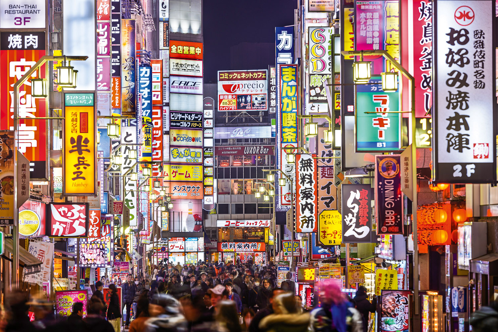

Tokyo, Japan is an incredible example of a long time culturally-isolated pacific power shaped itself into a worldwide trading center and prosperous metropolitan area. Its home to major corporations and huge manufacturing giants, as well as many small businesses and communities.
Greater Tokyo is the world's most populous metropolitan area and is the center of Japanese culture, finance, and government. A bustling cosmopolitan city, Tokyo is also a major transportation hub and a world economic and industrial center. The city boasts a large number of world-class institutions of higher education, the highest concentration of universities in Japan. Tokyo was known as Edo until 1868, when the Japanese imperial family was moved there from Kyoto. Metropolitan Tokyo is generally defined as the four prefectures of Tokyo, Saitaima, Kanagawa, and Chiba, while the city of Tokyo proper usually refers to the 23 wards in Tokyo prefecture itself. The metropolitan area includes the major cities of Yokohama (the second largest city in Japan), Kawasaki, and Chiba, as well as rural mountain regions west of the city, the Izu Islands outside Tokyo Bay, and the Bonin Islands to the southeast in the Pacific Ocean.
Tokyo is an ancient city that has grown organically rather than according to an imposed plan, it exhibits a layout that differs radically from the grid-like patterns of cities like Washington, D.C., or Chicago. The streets follow no discernible pattern, though they might approximate a spiderweb, with concentric circles.

https://www.encyclopedia.com/places/asia/japanese-political-geography/tokyo
https://www.bonappetour.com/blog/the-ultimate-tokyo-guide-food-attractions-and-experiences/